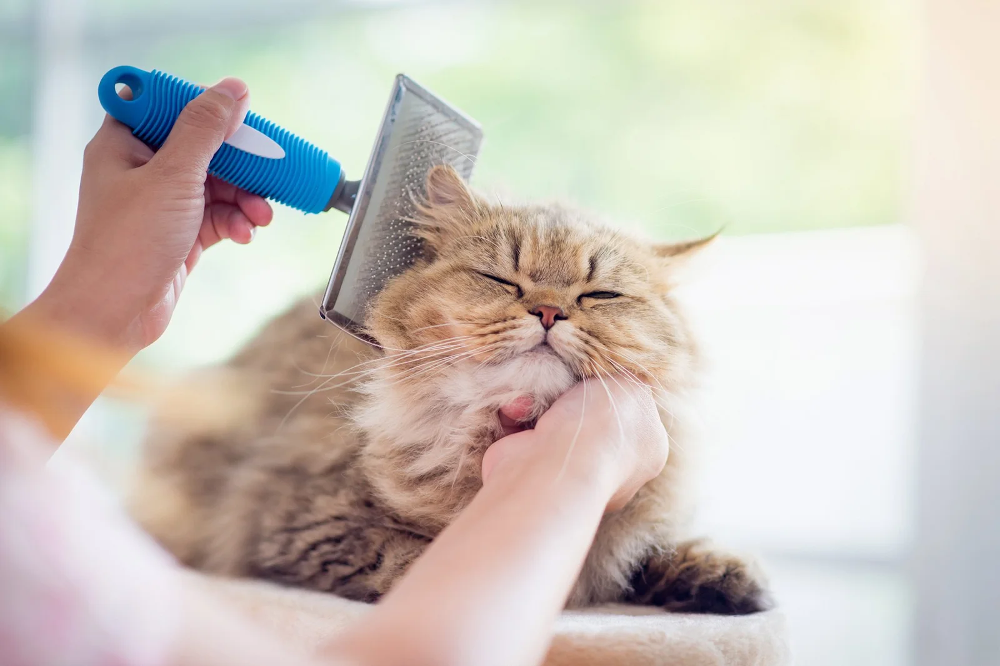

Let's Groom our Cat

- Brush: Regularly brush your cat's coat to reduce shedding and prevent mats.
- Nail Trim: Trim your cat's nails using cat nail clippers.
- Ear Clean: Clean your cat's ears with cat-friendly ear cleaning solution and cotton balls
- Optional Bath: If necessary, give your cat a bath using cat-friendly shampoo.
- Teeth (optional): If your cat allows, brush their teeth with a cat toothbrush and toothpaste.
- Positive Reinforcement: Use treats and praise to make the grooming experience positive
- Professional Help(if needed): Consider professional grooming for specialized care.
- Regular Routine: Establish a routine for consistent grooming and monitoring of your cat's health.
*Note:Remember, the key to successful cat grooming is patience and positive reinforcement.
If your cat becomes stressed or agitated, take breaks and go at their pace.
If you have concerns or difficulties, consult with your veterinarian or a professional groomer for guidance.